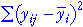

Summarising variation between and within groups
It was explained on the previous page that the evidence for a difference between the underlying group means is strongest when the variation between group means is high relative to the variation within groups. In this page, we describe quantities that summarise these two types of variation.
A little mathematical notation allows us to concisely define these summaries of variation. In each of the g groups, there are several values and we use the notation yi1, yi2, ... to denote the values in the i'th group. In general, the j'th of the response measurements in the i'th group is called yij.
The mean of the values in the i'th group is denoted by  .
.
Total variation
Before summarising variation within and between groups, we first present a value that describes the overall variability in the response measurement, ignoring the existence of groups.
| The total sum of squares reflects the total variability of the response. |
Note that the overall variance of all values (ignoring the existence of the groups) is the total sum of squares divided by (n - 1).
Variation between groups (signal)
A measure of variation between groups should summarise the distance between
group means. It is defined in terms of distances between the group means and the
overall mean,  .
.
| The sum of squares between groups measures the variability of the group means. |
Note that the summation here is over all observations in the data set — all values in any group separately contribute the same amount to the between-group sum of squares.
Variation within groups (noise)
The measure of variation within groups summarises the differences between the values and their group means.
|  | The sum of squares within groups quantifies the spread of values within each group. |
This is also called the residual sum of squares since it describes variability that is unexplained by differences between the groups. Note that the pooled estimate of the common variance, σ2, is the sum of squares within groups divided by (n - g).
Relationship between sums of squares
The following relationship requires some algebra to prove but is important.
Illustration of sums of squares
The display on the left below shows 8 numerical measurements from each of 4 groups.
The three jittered dot plots on the right show the values whose squares are summed to give the total, between-group and within-group sums of squares. Click on any of these three plots to display the quantities on the diagram on the left. The sums of squares summarise the size of the three components.
Use the slider to adjust the data values and observe how the relative size of the variation between groups and within groups is reflected in the size of these sums of squares.
| Evidence for a difference between the group means is strongest when the between-group sum of squares is much higher than the within-group sum of squares. |
|---|